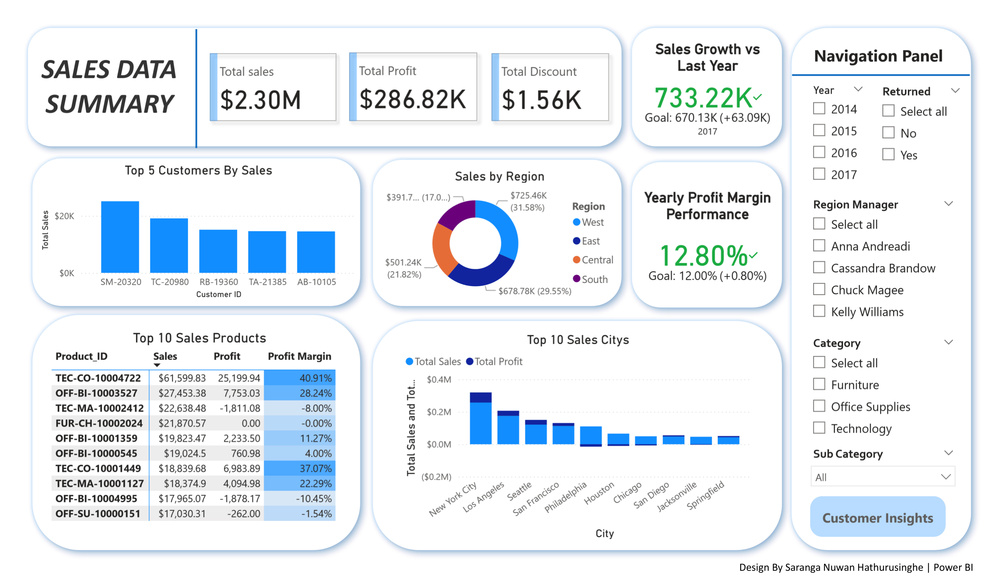
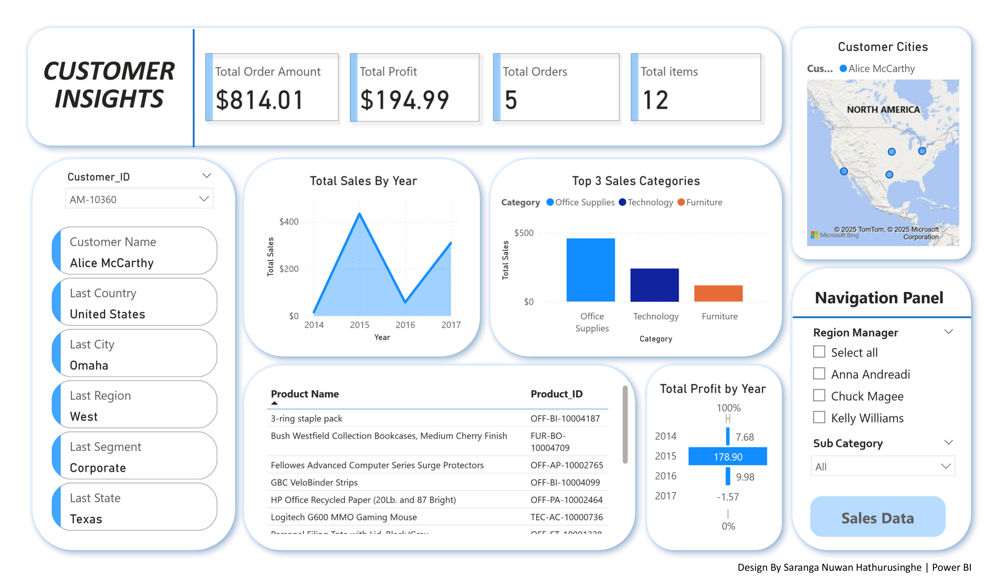
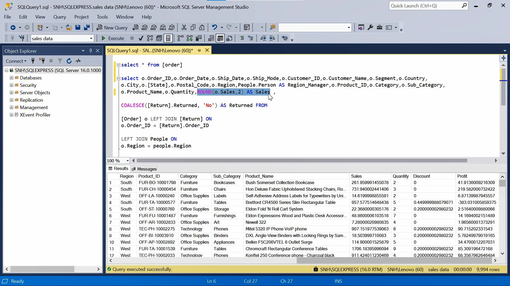

An interactive multi-page Power BI dashboard built on the Superstore Sales dataset - visualizing customer behavior, sales trends, and regional performance with SQL-driven data preparation and DAX-powered measures.
Two interactive pages - Sales Summary and Customer Insights - designed for stakeholder decision making.

KPIs, top customers & products, regional sales breakdown, growth vs last year, and top cities performance.

Per-customer sales trends, top product categories, profit by year, purchase history, and geographic location map.
Downloaded the Superstore Sales dataset from Kaggle - a real-world retail dataset containing 9,994 rows across orders, customers, products, regions, and returns. Imported into SQL Server (SSMS) as the starting point.
Used SQL queries to clean and prepare the data before loading into Power BI:
Year, Month, Profit FlagCOALESCE to handle missing return status valuesROUND() for consistencySELECT
o.Order_ID,
o.Order_Date,
o.Ship_Date,
o.Ship_Mode,
o.Customer_ID,
o.Customer_Name,
o.Segment,
o.Country,
o.City,
o.State,
o.Postal_Code,
o.Region,
p.Person AS Region_Manager,
o.Product_ID,
o.Category,
o.Sub_Category,
o.Product_Name,
o.Quantity,
ROUND(o.Sales, 2) AS Sales,
ROUND(o.Profit, 2) AS Profit,
ROUND(o.Discount, 2) AS Discount,
YEAR(o.Order_Date) AS Order_Year,
MONTH(o.Order_Date) AS Order_Month,
COALESCE(r.Returned, 'No') AS Returned,
CASE
WHEN o.Profit > 0 THEN 'Profitable'
ELSE 'Loss'
END AS Profit_Flag
FROM [Order] o
LEFT JOIN [Return] r ON o.Order_ID = r.Order_ID
LEFT JOIN People p ON o.Region = p.Region;
SSMS — query executed successfully · 9,994 rowsLoaded the cleaned SQL query result into Power BI Desktop and set up the data model:
Created custom DAX measures to power the KPIs, growth indicators, and profit margin calculations across both dashboard pages.
Total Sales =
SUM(Query1[Sales])
Total Profit =
SUM(Query1[Profit])
Total Discount =
SUM(Query1[Discount])
Profit Margin % =
DIVIDE(
SUM(Query1[Profit]),
SUM(Query1[Sales]),
0
) * 100Target Sales (YoY with Base) =
VAR SelectedYear = SELECTEDVALUE(Query1[Order_Date].[Year])
VAR BaseTarget = 400000
VAR PrevYear = SelectedYear - 1
VAR PrevYearSales =
CALCULATE(
SUM(Query1[Sales]),
FILTER(
ALL(Query1),
YEAR(Query1[Order_Date]) = PrevYear
)
)
VAR Target =
IF(
ISBLANK(PrevYearSales),
BaseTarget,
PrevYearSales * 1.10
)
RETURN TargetYearly Profit Margin % =
VAR CurrentMargin =
DIVIDE(
CALCULATE(SUM(Query1[Profit])),
CALCULATE(SUM(Query1[Sales])),
0
) * 100
VAR GoalMargin = 12.00
RETURN
IF(
CurrentMargin >= GoalMargin,
CurrentMargin,
CurrentMargin
)Total Orders =
DISTINCTCOUNT(Query1[Order_ID])
Total Items =
SUM(Query1[Quantity])
Total Order Amount =
CALCULATE(
SUM(Query1[Sales]),
ALLEXCEPT(Query1, Query1[Customer_ID])
)Designed two connected dashboard pages in Power BI with a consistent blue-white theme:
Profit margin and growth rate measures gave incorrect results due to filter context issues. Resolved using CALCULATE, ALL(), and FILTER() to explicitly control evaluation context.
Report was slow with large table visuals. Fixed by reducing unnecessary column imports, optimizing SQL query to load only required fields, and minimizing redundant visuals per page.
Slicers on one page were affecting unintended visuals. Managed using Power BI's Edit Interactions panel and Sync Slicers to control exactly which visuals respond to each filter.
This dashboard enables stakeholders to quickly identify key customers, profitable products, and high growth regions - supporting strategic decisions through clear, interactive visual insights. The combination of SQL for data preparation and Power BI + DAX for modeling demonstrates an end to end analytics workflow.
A walkthrough of the full workflow — SQL data preparation, DAX measure building, and the interactive Power BI dashboards.